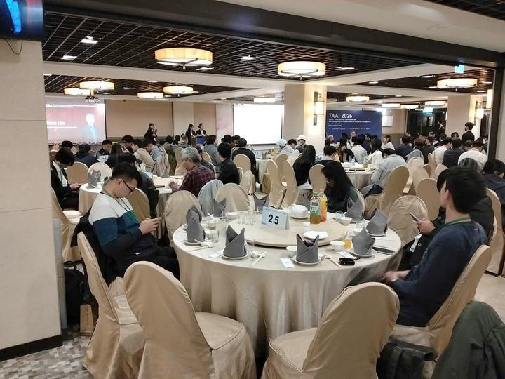
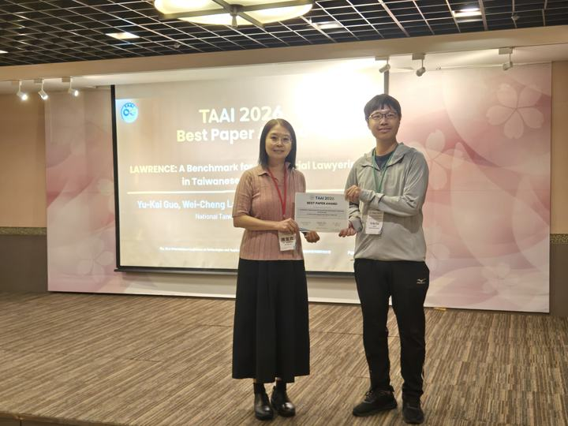
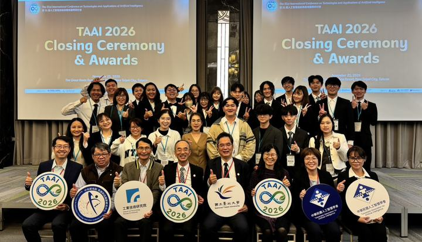

【新北市訊／2026 年 11 月 22 日】
由中華民國人工智慧學會（TAAI）與國立臺北大學共同主辦的「第 31 屆人工智慧技術與應用國際研討會」（TAAI 2026），於 11 月 20 日至 21 日在新北市三峽大板根森林溫泉酒店隆重舉行並圓滿落幕。本屆以「代理式 AI 與實體 AI 跨域永續創新」為核心主題，匯聚來自全球 13 個國家與地區、約 90 個學術與研究機構的 450 位論文作者，透過國際主題演講、學術論文發表、產業論壇、專題教學及創新競賽，深入探討人工智慧從生成式 AI 邁向自主決策、實體互動與跨域應用的最新發展。
本屆研討會共收到 205 篇論文投稿，157 篇論文獲安排發表，包含 69 篇國際組與 88 篇國內組論文，於 14 場口頭發表及 7 場海報展示中交流研究成果。其中，日本研究者參與 23 篇論文，展現臺灣人工智慧學術社群持續深化國際合作的成果。國際組論文將由 Springer 以 Communications in Computer and Information Science（CCIS）系列會後論文集（post-proceedings）形式出版，進一步提升研究成果的國際能見度。
為鼓勵卓越研究與學術交流，大會共頒發 28 項論文獎及論文發表獎，並全面提供具備專屬網址、QR Code 驗證及 PDF 下載功能的電子證書，以數位化方式落實永續理念。
四場國際主題演講 探索 AI 前瞻技術與真實世界應用
TAAI 2026 邀請來自美國、加拿大、日本及臺灣的四位重量級學者發表國際主題演講，涵蓋圖基礎模型、智慧語音、資訊安全與適應性對話系統等重要研究方向。
美國伊利諾大學芝加哥分校傑出教授、ACM／IEEE／AAAS Fellow Philip S. Yu 教授，分享以黎曼幾何建構下一代圖基礎模型的前瞻研究，由國立臺北大學戴志華教授主持。
中央研究院曹昱研究員介紹神經語音增強與評估技術，以及其於輔助口語溝通的應用成果，由中央研究院資訊科學研究所陳伶志研究員主持。
加拿大西門菲莎大學 IEEE Fellow Ljiljana Trajkovic 教授，探討利用人工智慧分析網路流量，提升異常偵測與資安防護能力，由國立臺北大學電機資訊學院楊棧雲院長主持。
日本大阪大學產業科學研究所Kazunori Komatani 教授，則聚焦對話系統如何因應使用者需求進行長期與短期適應，由國立臺灣大學電機工程學系李宏毅教授主持。
四場演講呈現人工智慧從基礎理論到實際應用的多元發展，也為跨國研究合作帶來新的交流契機。
聚焦 Agentic AI 與 Physical AI 深化智慧代理及具身人工智慧應用
隨著大型語言模型快速演進，人工智慧正從內容生成與問答互動，逐步走向具備自主規劃、工具使用及任務執行能力的代理式 AI（Agentic AI），並進一步延伸至能夠感知環境、學習操作與實體互動的實體 AI（Physical AI）。
呼應此一發展趨勢，大會規劃多場專題教學與國際交流活動。
在 Agentic AI 專題教學中，昊智未來科技創辦人崔殷豪分享企業導入 AI 代理的實務方法，強調將可明確定義的流程轉化為工具，並由大型語言模型處理判斷與生成任務，由戴敏育教授主持；國立臺南大學林豪鏘教授則以 AI 影片創作為主題，介紹結合現代詩、分鏡設計與運鏡技巧的生成式 AI 創作流程，由潘令妍教授主持。
Physical AI 專題教學邀請國立臺灣大學孫紹華副教授，介紹透過擴散模型與模仿學習打造智慧具身代理的研究方法，由胡敏君教授主持，呈現人工智慧與機器人技術整合的應用潛力。
國際座談「Adaptive AI in the Real World」由中央研究院陳伶志研究員主持，邀請曹昱研究員、Ljiljana Trajkovic 教授及 Kazunori Komatani 教授共同探討自適應人工智慧在真實世界部署所面臨的技術挑戰與未來機會。
此外，「青年女性之星」場次由古倫維研究員召集、胡敏君教授主持，邀請中央研究院連云暄助研究員，以及國立陽明交通大學江孟芬助理教授、簡婉軒助理教授，分享強化學習、可信賴大型語言模型推理與情感運算等研究成果，展現新世代女性研究者在人工智慧領域的創新能量。
串聯國科會、學界與產業 推動 AI 技術落地及跨域永續轉型
為縮短學術研究與產業實務之間的距離，本屆研討會特別規劃國科會智慧計算學門、產業應用、AI CUP 競賽，以及跨域 AI 永續創新等多元特邀場次，促進產官學研交流。
國科會智慧計算學門場次由學門召集人張嘉惠教授主持，邀請國立臺灣大學陳銘憲教授、國立陽明交通大學曾新穆教授及國立清華大學高宏宇教授，分享中堅躍升研究計畫成果，並說明學門業務與子領域政策規劃。第二天成果展同步展示 13 件研究計畫成果，呈現臺灣智慧計算研究的發展能量。
產業應用方面，兩場產業軌道分別由台灣人工智慧學校蔡明順校務長及國立臺北科技大學鍾建屏教授主持，邀請全家便利商店黃士杰部長、資策會產業情報研究所朱師右組長、吉格線技術長簡楷峯，以及荔枝智慧執行長何健偉，分享 AI 驅動商業模式創新、企業營運轉型、語音虛擬人、混合實境，以及 AI 代理的權限管理、人工覆核與稽核治理等實務經驗。
AI CUP 特邀場次由朝陽科技大學吳世弘教授主持，並與戴敏育教授、國立高雄科技大學戴鴻傑教授共同分享競賽設計、ESG 永續承諾驗證，以及將競賽成果轉化為國際學術發表的經驗。
大會亦舉辦三場「跨域 AI 永續創新論壇」，分別由戴敏育教授、國立臺北大學永續創新國際學院詹佳縈院長及汪志堅特聘教授主持，邀請國立中興大學金士懿博士、鍾建屏教授、巴桑塔教授、張瑋倫教授、汪志堅特聘教授、台灣法學基金會錢世傑執行長，以及火星生技董事長董澤平講座教授，從智慧能源治理、金融檢索增強生成（RAG）、可信賴與永續 AI、數位落差、生成式 AI 法學教育及生技健康產業轉型等面向，探討人工智慧對經濟、社會與永續發展的深遠影響。
157 篇論文、21 場學術交流 展現臺灣與國際 AI 研究能量
本屆研討會共安排 21 個論文發表場次，包括 7 場國際口頭發表、7 場國內口頭發表及 7 場海報展示，由 28 位場次主持人共同促進交流。
研究主題涵蓋大型語言模型與自然語言處理、電腦視覺與多模態學習、醫療與健康 AI、智慧代理與檢索增強生成、語音與聲學、資訊安全與可信賴 AI、電腦對局與遊戲 AI、資料探勘、最佳化與強化學習，以及人工智慧教育等領域，呈現 AI 技術研究與跨域應用的廣度。
除正式論文發表外，大會亦積極培育下一代人工智慧研究人才。TAAI 碩博士論文獎場次由國立中央大學鍾佳儒教授主持，邀請 8 篇得獎論文進行口頭報告。
高中生學術發表場次由國立成功大學黃仁暐教授主辦，共安排 4 篇長篇論文及 6 篇短篇論文發表，提供高中生接觸學術研究、展示成果與參與專業交流的機會。
「NAPAI Agentic AI 校園落地創新應用競賽」決賽暨頒獎活動，由 NAPAI 智慧代理與實體 AI 推動計畫辦公室主辦、張嘉惠教授主持，共有 16 支隊伍進行現場展示（DEMO）與評選，展現智慧代理技術在校園場域的創新應用潛力。
此外，大會亦舉辦線上電腦對局競賽，並於 11 月 20 日召開中華民國人工智慧學會會員大會，持續促進學術社群交流與發展。
28 項學術獎項揭曉 電子證書全面上線
為表揚優秀研究成果與學術表達能力，TAAI 2026 共頒發 28 項論文獎及論文發表獎，包括 7 項論文獎、14 項最佳口頭論文發表獎，以及 7 項最佳海報論文發表獎。
11 月 20 日歡迎晚宴中，頒發最佳論文獎、最佳學生論文獎與最佳產業論文獎。其中，三篇獲得最佳論文獎的研究成果分別為：
- 《LAWRENCE: A Benchmark for Adversarial Lawyering in Taiwanese Criminal Law》（國立臺灣大學）
- 《Training-free Conditional Object Composition for Multi-object Image Generation with Diffusion Models》（國立臺灣大學）
- 《Evaluating Cluster-Based Noise Exclusion in Disaster Social Media Imagery under Recall Constraints》（日本青山學院大學）
最佳學生論文獎由國立臺灣大學、國立中央大學及國立臺灣師範大學的三篇論文獲得；最佳產業論文獎則由資訊工業策進會獲得。
11 月 21 日閉幕典禮進一步頒發 14 項最佳口頭論文發表獎與 7 項最佳海報論文發表獎，肯定研究者在學術表達、成果展示與知識交流方面的優異表現。
值得一提的是，本屆全面導入數位化獲獎證書機制。每項獎項均設有專屬證書頁面與永久網址，提供證書預覽及 PDF 下載；證書內建 QR Code，方便得獎者、學術機構與相關單位連結大會官方網站進行查核，不僅提升學術獎項的可驗證性，也減少紙本證書補發與寄送等行政作業，呼應研討會永續創新的核心精神。
完整得獎名單及電子證書：
https://taai2026.github.io/zh/certificates/index.html
學會與主辦單位：攜手推動可信賴 AI 與國際人才交流
中華民國人工智慧學會理事長暨大會主席蔡宗翰表示：
「人工智慧正從回答問題，邁向自主規劃、使用工具與執行任務，並逐步進入機器人與真實世界。這樣的發展不僅需要更先進的技術，更需要跨領域合作，以及對可信賴 AI 與永續發展的共同承諾。TAAI 將持續串聯學術研究、產業需求與新世代人才，推動臺灣人工智慧創新與國際交流。」
國立臺北大學校長林道通表示：
「很榮幸與中華民國人工智慧學會共同主辦 TAAI 2026，讓來自 13 個國家與地區的研究者齊聚新北三峽，交流人工智慧的最新研究成果。國立臺北大學將持續深化 AI 研究與人才培育，促進跨域合作，並以創新科技回應產業與社會需求，為永續發展注入新動能。」
大會主席戴敏育表示：
「TAAI 2026 能夠圓滿舉行，凝聚了來自 21 個機構、61 位籌備委員，以及全體講者、研究者、審稿委員、場次主持人、志工與工作團隊的共同努力。本屆不僅展現 157 篇論文的研究成果，更透過代理式 AI、實體 AI、產業應用及跨域永續論壇，促進研究創新與實務需求的深度連結。特別感謝國立臺北大學各單位、國內外合作夥伴及 450 位論文作者的熱情參與。期盼透過 TAAI 平臺，持續擴大臺灣人工智慧研究的國際影響力，並培育更多具備跨域創新能力的優秀人才。」
感謝 61 位籌備委員及產官學研合作夥伴 共同促成國際盛會
TAAI 2026 的成功舉辦，仰賴跨校、跨機構團隊與產官學研各界的共同支持。
本屆研討會由國家科學及技術委員會、教育部及教育部資訊及科技教育司指導；中央研究院、中央研究院資訊科技創新研究中心、中央研究院資訊科學研究所及工業技術研究院協辦。
大會特別感謝金級贊助單位台達機器人創新研究院，以及銅級贊助單位台灣人工智慧學校、潮網科技（高中生註冊費指定贊助），並感謝國立臺灣大學、日本國立情報學研究所等 23 個合作單位的支持。
籌備團隊由國立臺北大學、中央研究院、國立臺灣大學、國立清華大學、國立中央大學、國立成功大學、國立陽明交通大學、日本國立情報學研究所等 21 個機構的 61 位委員共同組成，展現跨機構協作能量。
大會亦特別感謝國立臺北大學林道通校長、張玉山副校長、商學院黃啟瑞院長、電機資訊學院楊棧雲院長、永續創新國際學院詹佳縈院長的支持，以及資訊管理研究所汪志堅特聘教授、溫演福教授、潘令妍副教授、黃懷陞助理教授，鄧雅燕助教、AI4X 研究中心陳思因、AIAM 學程葉育瑜，與跨領域學生團隊的全心投入。
主辦單位同時感謝所有致詞貴賓、國際主題演講講者、論壇主持人與與談人、專題教學講者、場次召集人、競賽評審與參賽隊伍、全體審稿委員、工作人員及志工，攜手促成這場國際人工智慧學術盛會。
落實綠色會議 以數位創新實踐永續精神
呼應本屆「跨域永續創新」主題，TAAI 2026 採取數位優先的會議資訊服務，不印製紙本大會手冊，改由官方網站提供議程、論文摘要與完整會議資訊，並為所有得獎者提供電子證書（紙本獎狀於頒獎典禮現場頒發）。
透過學術交流、產業連結、青年人才培育及數位永續措施，TAAI 2026 不僅呈現人工智慧技術的最新研究成果，也展現臺灣學術界積極推動可信賴 AI、跨域創新及國際合作的持續努力。
隨著本屆研討會圓滿落幕，中華民國人工智慧學會將持續深化國際學術交流與產業合作，攜手研究社群探索人工智慧研究與應用的更多可能。
活動照片










活動資訊
- 活動名稱：
- 第 31 屆人工智慧技術與應用國際研討會（TAAI 2026）
- 活動日期：
- 2026 年 11 月 20 日至 21 日
- 活動地點：
- 新北市三峽大板根森林溫泉酒店
- 共同主辦：
- 中華民國人工智慧學會、國立臺北大學
- 大會主題：
- 代理式 AI 與實體 AI 跨域永續創新
關於 TAAI
中華民國人工智慧學會（TAAI）推動人工智慧在臺灣的研究、教育與應用。TAAI 每年與臺灣各大學及研究機構共同舉辦人工智慧技術與應用國際研討會，匯集國內 AI 社群與國際同儕。TAAI官網：https://www.taai.org.tw/（外部網站，另開新分頁）。
關於國立臺北大學
國立臺北大學（NTPU）於 2000 年由國立中興大學法商學院改制成立，主校區位於新北市三峽區。臺北大學的師資橫跨資訊科學、資料科學、商學與法律，設有法律學院、商學院、公共事務學院、社會科學學院、人文學院、電機資訊學院與永續創新國際學院七個學院，為本屆跨領域議程奠定基礎。臺北大學官網： https://new.ntpu.edu.tw/（外部網站，另開新分頁） 。
媒體聯絡
- 聯絡單位：國立臺北大學 資訊管理研究所 鄧雅燕 助教
- Email：taai2026org@gmail.com
- TAAI 2026 官網：https://taai2026.github.io/